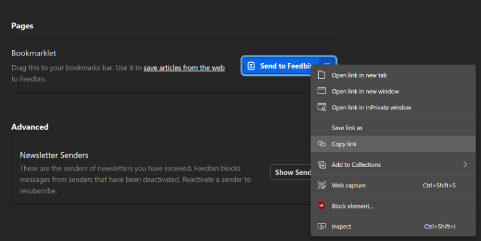

Send to Feedbin
In order to send pages to Feedbin, we need your token. The simplest way to get this is from the “Send to Feedbin” bookmarklet.
- Head to Feedbin's Sources page and find the “Send to Feedbin” bookmarklet.
- Right click on the bookmarklet and choose “Copy Link”.
- Paste the link into the box below.
- Click on the “Read from bookmarklet” button.
